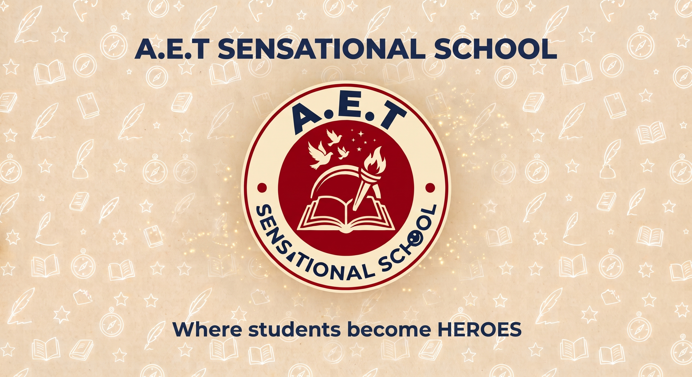

At A.E.T Sensational School, education extends far beyond traditional classroom learning. The institution is dedicated to nurturing young minds, fostering exceptional character, and preparing students to navigate the future with unwavering confidence and integrity. Built on a strong foundation of academic excellence and community values, the school provides a vibrant, supportive environment where every child is empowered to discover their unique talents and reach their full potential. The academic approach pairs rigorous instruction with engaging, hands-on learning to ignite curiosity, critical thinking, and a lifelong passion for knowledge. Alongside strong intellectual foundations, equal emphasis is placed on character development and leadership. By instilling essential values like integrity, empathy, and resilience, the school actively equips learners with the personal strength needed to become true leaders in their communities. To ensure complete growth, modern teaching methodologies are balanced with rich programs in creative arts, physical education, and collaborative projects. Every student receives individualized guidance within a safe and welcoming environment that celebrates diversity and personal achievement. Through the dedicated efforts of expert educators, A.E.T Sensational School ensures that students do not just pass through their school years—they emerge confident, capable, and ready to make a heroic impact on the world.
Want to become a hero?
CONTACT ME ON LINE 📞08062686222 📞09076792122